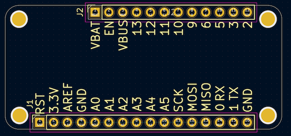

This project template forms the basis of an expansion board (Wing) for the Adafruit Feather
Specification, a standardised microcontroller board form-factor.

(c) 2023 Alex Bucknall
Adapted from the kicad-6-feather-wing template:
(c) 2022 station240